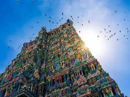

Tamil Nadu, a South Indian state, is famed for its Dravidian-style Hindu temples. In Madurai, Meenakshi Amman Temple has high ‘gopuram’ towers ornamented with colourful figures. On Pamban Island, Ramanathaswamy Temple is a pilgrimage site. The town of Kanyakumari, at India’s southernmost tip, is the site of ritual sunrises. Capital Chennai is known for beaches and landmarks including 1644 colonial Fort St. George.
